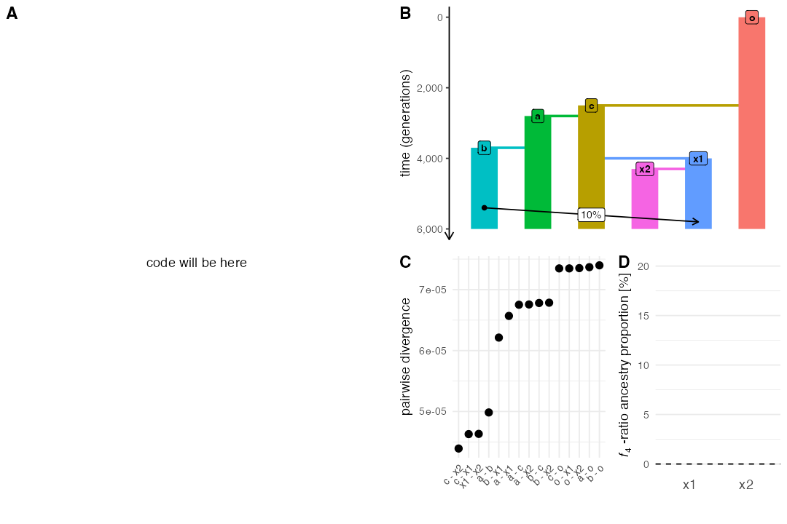
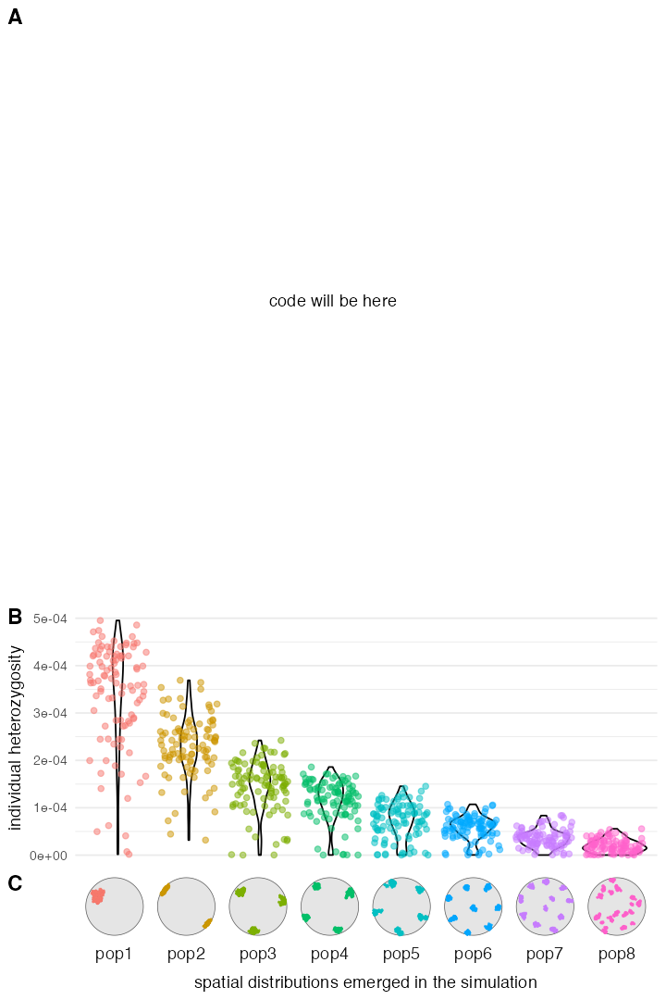
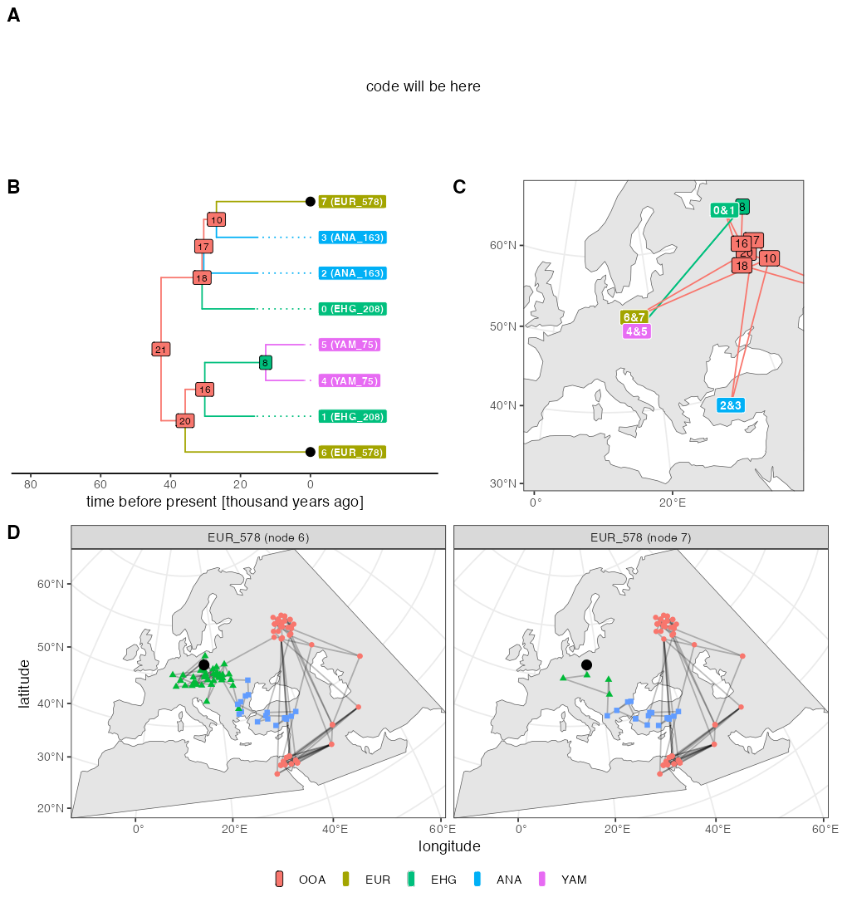

# workaround for GitHub actions getting "Killed" due to out of memory issues
# -- when running unit tests on GitHub, smaller amount of sequence will be
# simulated
if (Sys.getenv("RUNNER_OS") != "") {
scaling <- 10 # use 10X less sequence on GitHub actions
} else {
scaling <- 1 # but simulate normal amount of data otherwise
}
library(slendr)
library(dplyr)
#>
#> Attaching package: 'dplyr'
#> The following objects are masked from 'package:stats':
#>
#> filter, lag
#> The following objects are masked from 'package:base':
#>
#> intersect, setdiff, setequal, union
library(ggplot2)
library(purrr)
library(tidyr)
library(cowplot)
library(forcats)
init_env()
#> The interface to all required Python modules has been activated.
SEED <- 42
set.seed(SEED)
# placeholder "figure" where a code chunk will be pasted
p_code <- ggplot() +
geom_text(aes(x = 1, y = 1), label = "code will be here") +
theme_void()Example 1 (Figure 2)
Script from panel A
o <- population("o", time = 1, N = 100)
c <- population("c", time = 2500, N = 100, parent = o)
a <- population("a", time = 2800, N = 100, parent = c)
b <- population("b", time = 3700, N = 100, parent = a)
x1 <- population("x1", time = 4000, N = 15000, parent = c)
x2 <- population("x2", time = 4300, N = 15000, parent = x1)
gf <- gene_flow(from = b, to = x1, start = 5400, end = 5800, 0.1)
model <- compile_model(
populations = list(o, a, b, c, x1, x2), gene_flow = gf,
generation_time = 1, simulation_length = 6000
)
plot_model(model, sizes = FALSE, proportions = TRUE) # panel B
ts <- msprime(model, sequence_length = 100e6 / scaling, recombination_rate = 1e-8, random_seed = SEED) %>%
ts_mutate(mutation_rate = 1e-8, random_seed = SEED)
samples <- ts_samples(ts) %>% group_by(pop) %>% sample_n(100)
# panel C
divergence <- ts_divergence(ts, split(samples$name, samples$pop))
# panel D
f4ratio <- ts_f4ratio(
ts, X = filter(samples, pop %in% c("x1", "x2"))$name,
A = "a_1", B = "b_1", C = "c_1", O = "o_1"
)Plotting code
divergence <- divergence %>% mutate(pair = paste(x, "-", y))
f4ratio <- f4ratio %>% mutate(population = gsub("^(.*)_.*$", "\\1", X), alpha = alpha * 100)
p_ex1_divergence <- divergence %>%
ggplot(aes(fct_reorder(pair, divergence), divergence)) +
geom_point(size = 2.5) +
xlab("population pair") + ylab("pairwise divergence") +
theme_minimal() +
theme(legend.position = "bottom",
legend.text = element_text(size = 10),
axis.text.x = element_text(hjust = 1, angle = 45, size = 8),
axis.title.x = element_blank())
p_ex1_f4ratio <- f4ratio %>%
ggplot(aes(population, alpha)) +
geom_hline(yintercept = 0, linetype = 2) +
geom_jitter(alpha = 0.5) +
geom_boxplot(outlier.shape = NA, alpha = 0.7) +
ylab(base::expression(italic("f")[4]~"-ratio ancestry proportion [%]")) +
theme_minimal() +
coord_cartesian(ylim = c(0, 20)) +
theme(legend.position = "none",
axis.text.x = element_text(size = 11),
axis.title.x = element_blank(),
panel.grid.major.x = element_blank())#; p_ex3_f4ratio
# let's avoid ggpubr as another dependency:
# https://github.com/kassambara/ggpubr/blob/master/R/as_ggplot.R#L27
p_ex1_legend <- ggdraw() + draw_grob(grid::grobTree(get_legend(p_ex1_divergence)))
p_ex1_model <- plot_model(model, sizes = FALSE, proportions = TRUE)
p_ex1 <- plot_grid(
p_code,
plot_grid(
p_ex1_model,
plot_grid(
p_ex1_divergence + theme(legend.position = "none"),
p_ex1_f4ratio,
ncol = 2, rel_widths = c(1, 0.8), labels = c("C", "D")
),
p_ex1_legend, nrow = 3, rel_heights = c(1, 1, 0.1),
labels = "B"
),
nrow = 1, labels = c("A", "")
)
p_ex1
Example 2 (Figure 3)
Script from panel A
map <- world(xrange = c(0, 10), yrange = c(0, 10),
landscape = region(center = c(5, 5), radius = 5))
p1 <- population("pop1", time = 1, N = 2000, map = map, competition = 0)
p2 <- population("pop2", time = 1, N = 2000, map = map, competition = 9)
p3 <- population("pop3", time = 1, N = 2000, map = map, competition = 6)
p4 <- population("pop4", time = 1, N = 2000, map = map, competition = 5)
p5 <- population("pop5", time = 1, N = 2000, map = map, competition = 4)
p6 <- population("pop6", time = 1, N = 2000, map = map, competition = 3)
p7 <- population("pop7", time = 1, N = 2000, map = map, competition = 2)
p8 <- population("pop8", time = 1, N = 2000, map = map, competition = 1)
model <- compile_model(
populations = list(p1, p2, p3, p4, p5, p6, p7, p8),
generation_time = 1, simulation_length = 5000, resolution = 0.1,
mating = 0.1, dispersal = 0.05
)
ts <-
slim(model, sequence_length = 10e6 / scaling, recombination_rate = 1e-8, random_seed = SEED) %>%
ts_simplify() %>%
ts_mutate(mutation_rate = 1e-7, random_seed = SEED)
#> Warning: Simplifying a non-recapitated tree sequence. Make sure this is what you
#> really want
locations <- ts_nodes(ts) %>% filter(time == max(time))
heterozygosity <- ts_samples(ts) %>%
group_by(pop) %>%
sample_n(100) %>%
mutate(pi = ts_diversity(ts, name)$diversity)Plotting code
p_ex2_clustering <- ggplot() +
geom_sf(data = map) +
geom_sf(data = locations, aes(color = pop), size = 0.05, alpha = 0.25) +
facet_grid(. ~ pop, switch = "x") +
xlab("spatial distributions emerged in the simulation") +
theme(
strip.background = element_blank(),
strip.text = element_text(size = 11),
panel.grid = element_blank(),
axis.ticks = element_blank(),
axis.text = element_blank(),
panel.background = element_blank()
) +
guides(color = "none")
p_ex2_diversity <- ggplot(heterozygosity, aes(pop, pi, color = pop)) +
geom_violin(color = "black") +
geom_jitter(alpha = 0.5) +
labs(y = "individual heterozygosity") +
guides(color = "none") +
theme_minimal() +
theme(axis.title.x = element_blank(),
axis.text.x = element_blank(), panel.grid.major.x = element_blank(),
plot.margin = margin(t = 0.2, r = 0.2, b = -0.1, l = 0.2, "cm"))
p_ex2 <- plot_grid(
p_code,
plot_grid(
p_ex2_diversity,
p_ex2_clustering +
theme(plot.margin = margin(t = 0, r = 0.4, b = 0, l = 1.8, "cm")),
nrow = 2,
rel_heights = c(1, 0.5),
labels = c("B", "C")
),
nrow = 2, labels = c("A", ""), rel_heights = c(1.5, 1)
)
p_ex2
Example 3 (Figure 4)
Script from panel A
map <- world(xrange = c(-13, 70), yrange = c(18, 65), crs = 3035)
R1 <- region(
"EHG range", map,
polygon = list(c(26, 55), c(38, 53), c(48, 53), c(60, 53),
c(60, 60), c(48, 63), c(38, 63), c(26, 60))
)
R2 <- region(
"Europe", map,
polygon = list(
c(-8, 35), c(-5, 36), c(10, 38), c(20, 35), c(25, 35),
c(33, 45), c(20, 58), c(-5, 60), c(-15, 50)
)
)
R3 <- region(
"Anatolia", map,
polygon = list(c(28, 35), c(40, 35), c(42, 40),
c(30, 43), c(27, 40), c(25, 38))
)
R4 <- join(R2, R3)
R5 <- region(
"YAM range", map,
polygon = list(c(26, 50), c(38, 49), c(48, 50),
c(48, 56), c(38, 59), c(26, 56))
)
ooa_trajectory <- list(c(40, 30), c(50, 30), c(60, 40), c(45, 55))
map <- world(xrange = c(-13, 70), yrange = c(18, 65), crs = 3035)
ooa <- population(
"OOA", time = 50000, N = 500, remove = 23000,
map = map, center = c(33, 30), radius = 400e3
) %>%
move(trajectory = ooa_trajectory, start = 50000, end = 40000, snapshots = 30)
ehg <- population(
"EHG", time = 28000, N = 1000, parent = ooa, remove = 6000,
map = map, polygon = R1
)
eur <- population(
"EUR", time = 30000, N = 2000, parent = ooa,
map = map, polygon = R2
) %>%
resize(N = 10000, time = 5000, end = 0, how = "exponential")
ana <- population(
"ANA", time = 25000, N = 4000, parent = ooa, remove = 3000,
map = map, polygon = R3
) %>%
expand_range(by = 3e6, start = 10000, end = 7000, polygon = R4, snapshots = 15)
yam <- population(
"YAM", time = 7000, N = 600, parent = ehg, remove = 2500,
map = map, polygon = R5
) %>%
move(trajectory = list(c(15, 50)), start = 5000, end = 3000, snapshots = 10)
gf <- list(
gene_flow(ana, to = yam, rate = 0.5, start = 6500, end = 5000),
gene_flow(ana, to = eur, rate = 0.6, start = 8000, end = 6000),
gene_flow(yam, to = eur, rate = 0.7, start = 3500, end = 3000)
)
model <- compile_model(
populations = list(ooa, ehg, eur, ana, yam), gene_flow = gf,
generation_time = 30, resolution = 10e3,
competition = 150e3, mating = 120e3, dispersal = 90e3
)
samples <- schedule_sampling(
model, times = seq(0, 50000, by = 1000),
list(ehg, 20), list(ana, 20), list(yam, 20), list(eur, 20)
)
plot_model(model, sizes = FALSE)
plot_map(model)
ts <- slim(
model, burnin = 200000, samples = samples, random_seed = SEED,
sequence_length = 200000, recombination_rate = 1e-8
)Example 4 (Figure 5)
Script from panel A
ts_small <- ts_simplify(ts, simplify_to = c("EUR_578", "YAM_75", "ANA_163", "EHG_208"))
tree <- ts_phylo(ts_small, i = 20 / scaling)
#> Starting checking the validity of tree...
#> Found number of tips: n = 8
#> Found number of nodes: m = 7
#> Done.
nodes <- ts_nodes(tree)
edges <- ts_edges(tree)
ancestors <- ts_ancestors(ts, "EUR_578")Plotting code
library(ggtree)
#> ggtree v3.6.2 For help: https://yulab-smu.top/treedata-book/
#>
#> If you use the ggtree package suite in published research, please cite
#> the appropriate paper(s):
#>
#> Guangchuang Yu, David Smith, Huachen Zhu, Yi Guan, Tommy Tsan-Yuk Lam.
#> ggtree: an R package for visualization and annotation of phylogenetic
#> trees with their covariates and other associated data. Methods in
#> Ecology and Evolution. 2017, 8(1):28-36. doi:10.1111/2041-210X.12628
#>
#> Guangchuang Yu. Data Integration, Manipulation and Visualization of
#> Phylogenetic Trees (1st edition). Chapman and Hall/CRC. 2022,
#> doi:10.1201/9781003279242
#>
#> Guangchuang Yu. Using ggtree to visualize data on tree-like structures.
#> Current Protocols in Bioinformatics. 2020, 69:e96. doi:10.1002/cpbi.96
#>
#>
#> Attaching package: 'ggtree'
#> The following object is masked from 'package:tidyr':
#>
#> expand
# prepare annotation table for ggtree linking R phylo node ID (not tskit integer
# ID!) of each node with its population name
df <- as_tibble(nodes) %>% select(node = phylo_id, pop)
abs_comma <- function (x, ...) {
format(abs(x) / 1000, ..., scientific = FALSE, trim = TRUE)
}
highlight_nodes <- as_tibble(nodes) %>% dplyr::filter(name == "EUR_578") %>% .$phylo_id
p_tree <- ggtree(tree, aes(color = pop, fill = pop)) %<+% df +
geom_tiplab(align = TRUE, geom = "label", offset = 2000,
color = "white", fontface = "bold", size = 2.7) +
geom_tiplab(align = TRUE, geom = NULL, linetype = "dotted", size = 0) +
geom_point2(aes(subset = (node %in% highlight_nodes)), color = "black", size = 2.7) +
geom_label2(aes(label = label, subset = !isTip),
color = "black", size = 2.7) +
theme_tree2() +
theme(legend.position = "none") +
xlab("time before present [thousand years ago]") +
scale_x_continuous(limits = c(-80000, 31000), labels = abs_comma,
breaks = -c(100, 80, 60, 40, 20, 0) * 1000)
p_tree <- revts(p_tree)
# nodes$label <- ifelse(is.na(nodes$name), nodes$node_id, nodes$name)
nodes$label <- sapply(1:nrow(nodes), function(i) {
if (is.na(nodes[i, ]$name))
nodes[i, ]$node_id
else {
ind <- nodes[i, ]$name
paste(nodes[!is.na(nodes$name) & nodes$name == ind, ]$node_id, collapse = "&")
}
})
p_map <- ggplot() +
geom_sf(data = map) +
geom_sf(data = edges, aes(color = parent_pop), size = 0.5) +
geom_sf_label(data = nodes[!nodes$sampled, ],
aes(label = node_id, fill = pop), size = 3) +
geom_sf_label(data = nodes[nodes$sampled, ],
aes(label = label, fill = pop), size = 3,
fontface = "bold", color = "white") +
coord_sf(xlim = c(3177066.1, 7188656.9),
ylim = c(757021.7, 5202983.3), expand = 0) +
guides(fill = guide_legend("", override.aes = aes(label = ""))) +
guides(color = "none") +
scale_colour_discrete(drop = FALSE) +
scale_fill_discrete(drop = FALSE) +
theme_bw() +
theme(legend.position = "bottom",
axis.title.x = element_blank(),
axis.title.y = element_blank())
chrom_names <- stats::setNames(
c("EUR_578 (node 6)", "EUR_578 (node 7)"),
unique(ancestors$node_id)
)
p_ancestors <- ggplot() +
geom_sf(data = map) +
geom_sf(data = ancestors, size = 0.5, alpha = 0.25) +
geom_sf(data = sf::st_set_geometry(ancestors, "parent_location"),
aes(shape = parent_pop, color = parent_pop)) +
geom_sf(data = filter(ts_nodes(ts), name == "EUR_578"), size = 3) +
coord_sf(expand = 0) +
labs(x = "longitude", y = "latitude") +
theme_bw() +
facet_grid(. ~ node_id, labeller = labeller(node_id = chrom_names)) +
theme(legend.position = "none")
p_legend <- ggdraw() + draw_grob(grid::grobTree(get_legend(p_map)))
p_ex4 <- plot_grid(
p_code,
plot_grid(p_tree + theme(legend.position = "none"),
p_map + theme(legend.position = "none"),
labels = c("B", "C"), rel_widths = c(1, 0.9)),
p_ancestors,
p_legend,
labels = c("A", "", "D", ""),
nrow = 4, rel_heights = c(0.5, 1, 1, 0.1)
)
p_ex4
Run time of each code example from the paper
The following times were measured on a 16’’ MacBook Pro with the Apple M1 Pro chip (2021 model), 32 GB RAM, running macOS Ventura Version 13.1.
| example | time | units |
|---|---|---|
| ex1 | 5.6433825 | mins |
| ex2 | 12.7513894 | mins |
| ex3 | 2.1332421 | mins |
| ex4 | 0.7229002 | secs |
In the table above, ex1, ex2,
ex3, and ex4 correspond to runtimes of code
shown in one of the four example figures in the slendr
paper.